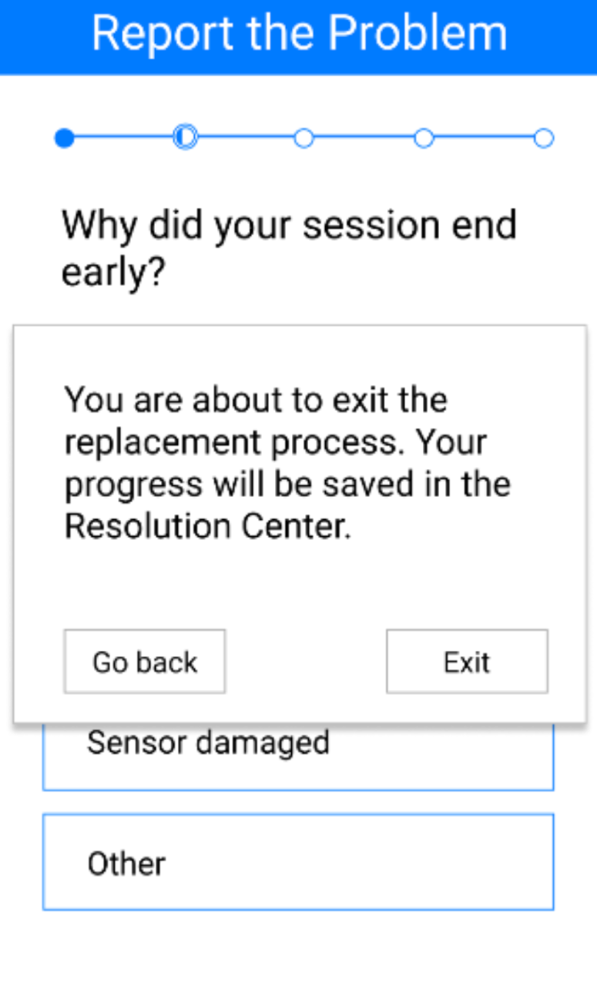

Resolution Center
You will be walked through another team's sensor replacement screens. Here is a preview...

After their screens you will navigate back to the resolution center
 Resolution Center
Resolution Center